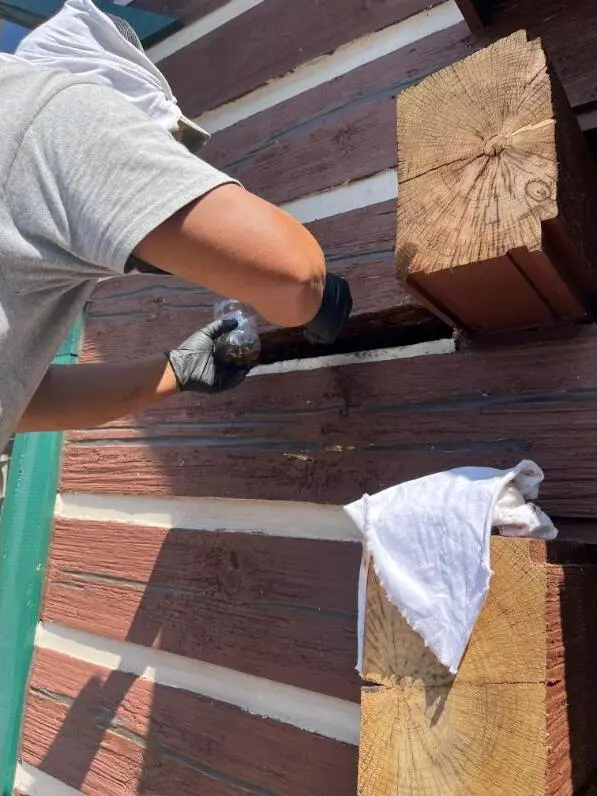

Home › Services › Log Cabin Repair
Log Cabin Repair & Maintenance Done by Log People
Log homes aren't just houses with round walls — they move, breathe, and weather in their own way, and they punish owners who treat them like ordinary siding. We've worked on log homes for fifteen-plus years, including operating our own log cabin rental.
The maintenance that saves log homes
A log home's finish is its armor. Stain and sealant break down in mountain sun and driven rain, chinking pulls away as logs settle, and the south and west walls always go first. Kept on schedule, this is affordable maintenance; ignored, it becomes rot — and rot in a log wall is structural.

Repair before replacement, replacement when it's real
We find the moisture problem, fix the source, and repair what the water reached — from epoxy consolidation of small areas to cutting out and replacing full log sections. Because we also handle drainage and crawlspace moisture, we fix why the wall got wet, not just the wall.
- Media blasting, staining, and sealing
- Chinking and caulking repair and replacement
- Rot repair and log section replacement
- Carpenter bee and pest damage repair
- Settling checks: doors, windows, and gaps
We own one, too
We maintain our own log cabin as a top-rated vacation rental — so the schedule we recommend to you is the one we actually follow when the building is ours and the reviews are on the line.
Log home questions, answered
How often does a log home need re-staining?
In High Country conditions, usually every 3–5 years — sooner on south- and west-facing walls that take the sun. We'll assess your finish honestly rather than by the calendar.
Can rotted logs be repaired without rebuilding the wall?
Usually. Small and moderate rot can be cut out, consolidated, or patched with matching material; larger damage means replacing log sections — which we do. Full wall rebuilds are rare.
Do you fix the cause of the rot too?
Always — otherwise the repair is temporary. Gutters, grading, drainage, splash-back, crawlspace moisture: the same crew handles the water problem and the wood repair.
Do you have real log home experience?
Fifteen-plus years of it, and we maintain our own log cabin as a top-rated vacation rental. Log homes are a specialty, not a sideline.